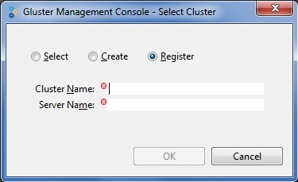

To register a cluster, perform the following steps.
Launch the application and log in with a valid password.
Select Cluster window is displayed.

Select Register. Type the name of the cluster and server name in the respective fields.
Note: Ensure that you type an online server name in the Server Name field.
Click OK. The Gluster Management Console will register the cluster with the gateway; fetch all the management information such as servers, volume resources and display them in the console.